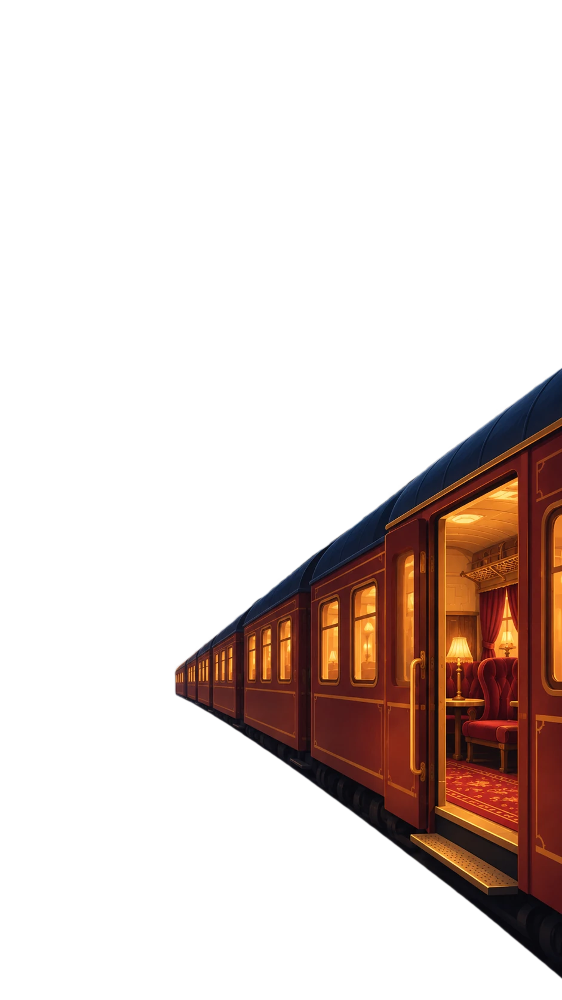
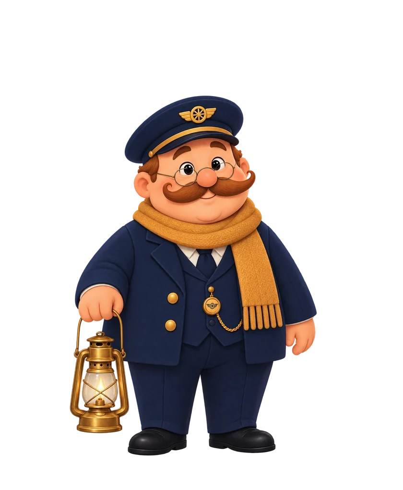
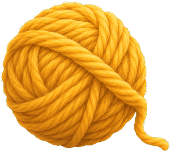

Gare centrale · voie 7 0 j100 %
Le train est à quai.
DÉPARTS--:--
GUICHET · NOUVELLE LIGNE
Quel voyage veux-tu accomplir ?
Plomber la ligneAucune sortie avant la gare : pas de frein d'urgence.
Le train part tout seul ces jours-là, à cette heure-là.
AMIS · LE HALL DE LA GARE
COOP · LA VOITURE-SALON
Montez à plusieurs.

GUICHET · TRAIN COOP
Un train pour toute la bande.
Plomber le trainAucune sortie avant la gare, pour personne.
Si quelqu’un tire le frein, tout le monde échoue. Son nom sera écrit sur la carte d’incident de chacun.
TON OBJET · IL MARQUE TA PLACE
GUICHET · TA LIGNE
Ligne
Réglages de la ligne
RÉGLAGES
Ton voyage, tes règles.
Toi
Ton prénomLe Contrôleur t’appellera ainsi.
Abonnement
Tout recommencer
Efface tes lignes, ton carnet, ton voyage et l’état du train. Ton prénom, tes réglages et tes amis restent.